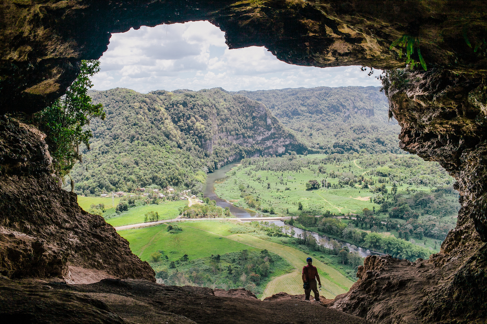
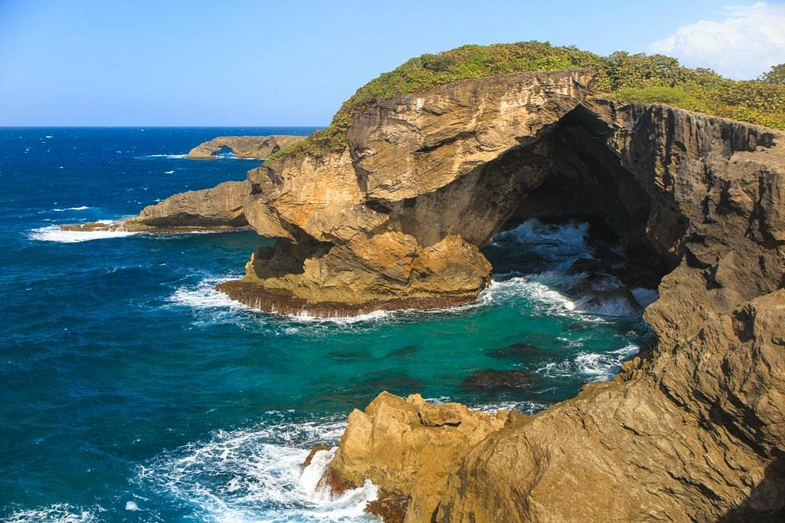
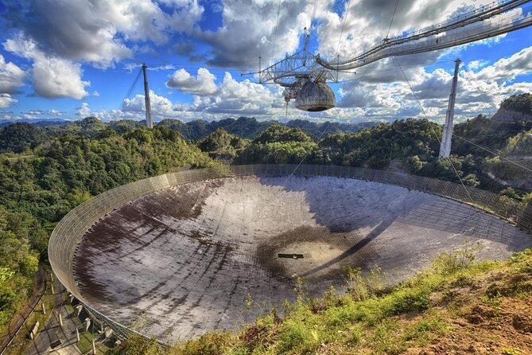

Aventura Cueva Ventana
Cueva Ventana es una gran cueva situada en lo alto de un acantilado de piedra caliza en Arecibo, Puerto Rico, con vistas al valle del Río Grande de Arecibo.
Se puede visitar La Cueva Ventana en:
Cueva del Indio
La Cueva del Indio en el municipio de Arecibo, es una de las cuevas taínas con petroglifos más conocida de la isla y guarda en sus paredes rocosas parte de nuestra historia como puertorriqueños.
Se puede visitar La Cueva del Indio en:
- Direccion: F9R5+G8J, Arecibo, 00612
Observatorio de Arecibo

El radiotelescopio de Arecibo fue un telescopio situado en Arecibo, Puerto Rico, al norte de la isla. Estuvo administrado por 45 años por la Universidad Cornell con un acuerdo de cooperación con la National Science Foundation hasta el mes de octubre de 2011. A partir de esa fecha los nuevos administradores son la Universidad Metropolitana (UMET), SRI International y The Universities Space Research Association (USRA). Con esta nueva alianza de administradores tenían proyectado construir un planetario y un programa doctoral en astronomía y ciencias del espacio, una facultad investigadora para universidades de Puerto Rico y un programa de verano de investigación para estudiantes en universidades estadounidenses.
En el presente el Radiotelescopio fue destruido por fallas estructurales pero sus ruinas permanecen y se pueden ir a observar.
Pueden visitar el Observatorio de Arecibo en:
- Dirección: PR-625, Arecibo, 00612, Puerto Rico
La poza del Obispo

Esta pequeña playa se encuentra justo al lado del hermoso faro de Arecibo. La Poza del Obispo está protegida por formaciones rocosas, que forman un área poco profunda perfecta para nadar. Cuando visite este lugar, tenga cuidado ya que, según el clima, las condiciones para nadar pueden variar.
Pueden visitar La Poza del Obispo en:
- Dirección: F8J3+M8J, Arecibo, 00612, Puerto Rico